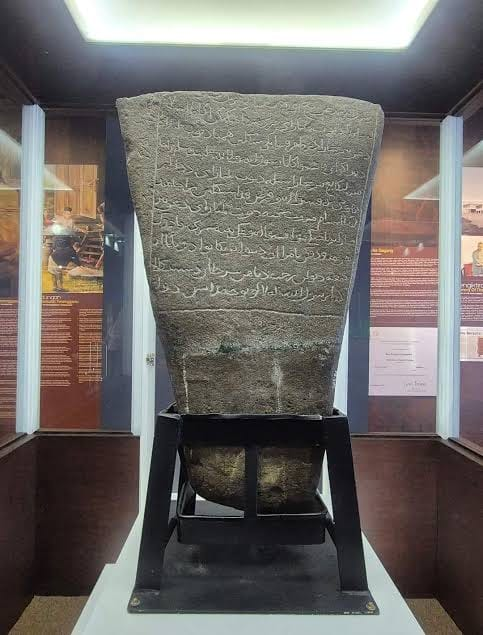

Ciri-ciri Batu Bersurat Terengganu
Ciri-ciri Fizikal
- Ketinggian: 89 sentimeter
- Lebar bahagian atas: 53 sentimeter
- Berat: 214.8 kilogram
- Permukaan berinskripsi: empat bahagian

Ciri-ciri Tulisan dan Bahasa
Inskripsi pada keempat-empat muka batu
Panel pameran yang memaparkan tulisan Jawi pada Muka A hingga D, beserta transliterasi rumi dan terjemahan bahasa Inggeris. Tekan gambar untuk paparan penuh. Sumber gambar: https://vt.tiktok.com/ZSpVLUg6T/
Keunikan Batu Bersurat Terengganu
Keunikan Kandungan Inskripsi
Pengisytiharan dan Pengukuhan Islam
Catatan Peraturan dan Undang-undang
Batu Bersurat mengandungi beberapa peraturan berkaitan kehidupan masyarakat yang berteraskan prinsip perundangan Islam. Catatan tersebut memberikan gambaran tentang usaha mengatur kehidupan sosial berdasarkan nilai dan ajaran agama.
Tanggungjawab Pemerintah dan Masyarakat
Kandungan inskripsi turut memperlihatkan kepentingan tanggungjawab pemerintah serta masyarakat dalam mematuhi peraturan yang ditetapkan.
Penggunaan Tulisan Jawi dalam Urusan Rasmi
Penggunaan tulisan Jawi pada sebuah batu bersurat menunjukkan bahawa tulisan tersebut telah digunakan sebagai medium penyampaian maklumat dan peraturan kepada masyarakat pada zaman berkenaan.
Keunikan dari Sudut Sejarah